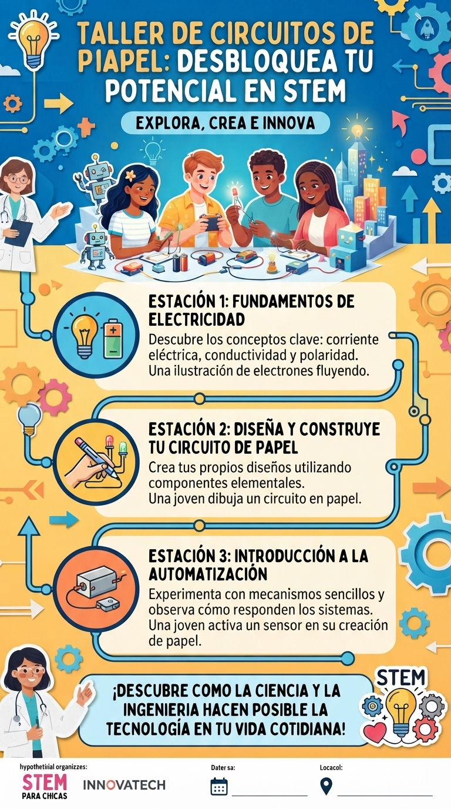

Circuitos de Papel
Una experiencia para descubrir los principios básicos de la electricidad y la automatización mediante la construcción de circuitos sencillos utilizando papel, materiales conductores y componentes electrónicos.
El taller combina ciencia, construcción y creatividad para que las y los participantes puedan experimentar directamente con los conceptos que están aprendiendo.